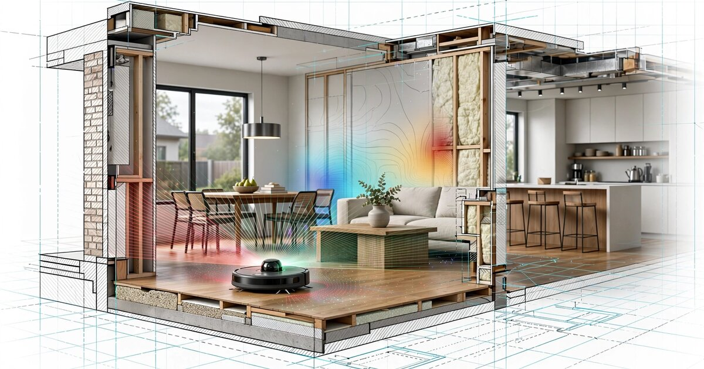

System and Method for Continuous Residential Structural Deformation Monitoring Using Temporal Differencing of Consumer Robot Vacuum LiDAR SLAM Maps with Edge-Deployed Change-Point Detection

Abstract
Disclosed is a system and method for detecting foundation settlement, floor warping, wall displacement, and other structural deformations in residential buildings by computing temporal differences between sequential LiDAR-based simultaneous localization and mapping (SLAM) occupancy grids generated by consumer robot vacuums during routine cleaning operations. Modern LiDAR robot vacuums (Roborock, iRobot, Ecovacs, Dreame, and others) construct 2D occupancy grid maps with 2-5 cm resolution during every cleaning cycle. By registering and differencing maps collected over weeks, months, and years from the same dwelling, the system detects sub-centimeter geometric changes in wall positions, doorframe dimensions, room diagonals, and inter-room angular relationships that correlate with foundation settlement, soil heave, thermal expansion anomalies, and water damage. An on-device change-point detection algorithm identifies statistically significant deviations from a baseline map ensemble, classifies the spatial pattern of deformation (uniform settlement vs. differential settlement vs. lateral displacement vs. localized floor deflection), and alerts the homeowner when deformation trajectories exceed configurable thresholds. The system repurposes the estimated 45+ million LiDAR-equipped robot vacuums already deployed in homes worldwide as a distributed structural health monitoring network requiring no additional hardware, no professional installation, and no modification to the building itself.
Field of the Invention
This invention relates to structural health monitoring (SHM) of residential buildings, specifically to methods for detecting and classifying building deformation using geometric analysis of floor plan maps generated by consumer robotic vacuum cleaners equipped with LiDAR sensors.
Background
Residential structural damage from foundation settlement is a pervasive and costly problem. The American Society of Civil Engineers estimates that foundation problems affect approximately 25% of all U.S. homes at some point in their lifetime. Repair costs range from $2,000 for minor crack sealing to $100,000+ for full pier underpinning. The fundamental challenge is that settlement is slow (millimeters per year in most cases), invisible until it becomes severe (cracked drywall, sticking doors, visible floor slopes), and expensive to monitor with professional instruments.
Current approaches to residential structural monitoring include:
- Professional surveying: Licensed surveyors use optical levels, total stations, or laser scanners to measure floor elevation profiles and wall plumbness. Cost: $500-$2,000 per survey. Frequency: typically performed only when damage is already visible or during real estate transactions. NGS standards specify ±1mm accuracy for first-order leveling, but residential surveys rarely achieve this in practice.
- Tiltmeters and crack gauges: Precision instruments mounted on walls or foundations provide continuous monitoring at individual points. Products from Geokon (Model 4000 biaxial tiltmeter, ±0.001° resolution) and Sisgeo cost $500-$2,000 per sensor plus installation and data logging. Practical for commercial buildings and bridges but prohibitively expensive for residential deployment at the density needed to characterize a full foundation (8-16 sensors for a typical single-family home).
- Smartphone-based approaches: Feng et al. (2015) demonstrated using smartphone accelerometers for vibration-based structural health monitoring, and our own LITF-PA-2026-003 discloses smartphone-based passive SHM via ambient vibration. However, smartphones measure dynamic vibration response, not static geometric deformation. A building can settle 20mm without any change in its vibration characteristics. Floor slope measurement via smartphone inclinometer apps achieves at best ±0.1° accuracy (±1.7mm per meter), insufficient for early detection of settlement at sub-millimeter levels.
- Satellite InSAR: Crosetto et al. (2016) review persistent scatterer interferometric synthetic aperture radar (PS-InSAR) for ground subsidence monitoring. InSAR measures vertical displacement with 1-2mm precision over months, but operates at 5-20m spatial resolution and 6-12 day revisit cycles. It detects regional subsidence but cannot resolve individual building deformations or interior structural changes (floor deflection, wall displacement, doorframe distortion).
Meanwhile, the consumer robot vacuum market has undergone a sensor revolution. IDC estimates that global robot vacuum shipments exceeded 20 million units in 2025, with LiDAR-equipped models now representing over 60% of units sold above $300. Roborock, the market leader by revenue, reported in its SEC filings that its S-series vacuums construct occupancy grid maps at 5cm resolution using time-of-flight LiDAR spinning at 5-6 Hz. iRobot's Roomba j-series and s-series use similar LiDAR SLAM systems. These robots clean 3-7 times per week in typical households, generating a fresh floor plan map on every run.
The gap in the art is a system that exploits this massive installed base of precision mapping robots as structural health monitors, detecting geometric changes in the built environment by comparing maps generated over time from routine household operation.
Detailed Description
1. Map Acquisition and Storage
Consumer LiDAR robot vacuums construct 2D occupancy grid maps during each cleaning session. The map is a grid of cells (typically 5cm × 5cm), where each cell is classified as occupied (wall, furniture), free (traversable floor), or unknown. The robot's SLAM algorithm (typically a variant of GMapping (Grisetti et al., 2007) or Cartographer (Hess et al., 2016)) fuses LiDAR range measurements with odometry to simultaneously estimate the robot's pose and the map. Modern implementations achieve map accuracy of 2-5cm for room-sized environments, validated by Santos et al. (2021).
The system intercepts and stores the raw occupancy grid from each cleaning session. Storage options include: (a) on-device storage in the robot's companion app (most manufacturers already store the "current" map; the system extends this to archive historical maps), (b) cloud storage via the manufacturer's API (Roborock, Ecovacs, and Dreame all provide cloud APIs for map retrieval), or (c) local network extraction via the robot's LAN interface (several manufacturers expose map data over local HTTP or MQTT endpoints, and the open-source Valetudo firmware provides a standardized map API for multiple robot vacuum platforms).
Each stored map is tagged with: timestamp, robot model and serial number, LiDAR sensor model, firmware version, estimated map resolution, battery start level (proxy for odometry drift risk at low battery), and cleaning mode (full-house vs. spot cleaning). Maps from spot-cleaning sessions covering less than 60% of the home's floor area are flagged as partial and handled separately in the analysis pipeline.
2. Map Registration and Alignment
Because the robot starts each cleaning session from a different docking station position (within the charging station's ±2cm repeatability) and follows different cleaning paths, raw maps from different sessions are not pixel-aligned. The system performs rigid-body registration (translation + rotation) to align each new map to a reference coordinate frame.
Registration uses the iterative closest point (ICP) algorithm (Besl and McKay, 1992) applied to the extracted wall segments. The algorithm operates in three stages:
- Wall extraction: Connected components of occupied cells are extracted from the occupancy grid. Short segments (< 30cm) are discarded as likely furniture. Remaining segments are fitted with line segments using RANSAC (random sample consensus) with an inlier threshold of 2cm. This produces a set of wall line segments {(x1, y1, x2, y2)} for each map.
- Coarse alignment: The dominant wall orientations in each map are computed (most residential floor plans have walls aligned to two orthogonal directions). The rotation between maps is estimated by matching these dominant orientations. Translation is estimated by matching the centroid of all wall segments.
- Fine alignment: ICP iteratively refines the rigid-body transformation by minimizing the sum of squared distances between corresponding wall points in the two maps. Convergence criterion: mean point-to-point distance < 1cm or maximum 50 iterations. The final registration residual quantifies the alignment quality; maps with residuals exceeding 3cm are flagged for manual review (likely due to major furniture rearrangement or mapping failure).
Furniture filtering is essential because furniture moves between cleaning sessions while walls do not. The system distinguishes walls from furniture using temporal persistence: a feature that appears in the same location (±10cm) in at least 80% of maps over a 30-day window is classified as structural (wall, built-in cabinet, fixed island). Features that appear intermittently are classified as furniture and excluded from deformation analysis. This classification improves over time as the map archive grows.
3. Structural Feature Extraction
From each registered and furniture-filtered map, the system extracts a set of structural features that encode the building's geometry:
- Wall segment positions: For each identified wall, the perpendicular distance from the wall's fitted line to the coordinate frame origin, and the wall's angle relative to the primary axis. Typical residential walls are 10-15m long with 2-5cm map resolution; a wall position can be estimated with standard error of approximately wall_resolution / sqrt(N_cells), where N_cells is the number of occupied cells along the wall (typically 200-300 for a 10m wall at 5cm resolution), yielding ±0.3cm standard error per map.
- Doorframe widths: Gaps in wall segments correspond to doorframes. The system measures the distance between the two wall endpoints flanking each gap. Standard interior doorframes are 81-91cm (32"-36"); the system monitors changes in this dimension over time. A doorframe that narrows by 5mm+ over 6 months is a strong indicator of differential settlement in the wall plane.
- Room diagonals: For each identified room (enclosed region of free space), the system computes the two diagonal distances between opposite corners. In a perfectly rectangular room, the diagonals are equal. Differential settlement introduces a measurable diagonal difference: a room that was square within ±1cm but now shows a 5mm diagonal discrepancy has experienced differential movement. This is the same principle as the "3-4-5 triangle" method used by builders to check squareness.
- Inter-room angular relationships: The angles between wall segments in adjacent rooms encode the planarity of the floor plate. If the kitchen's north wall is parallel to the living room's north wall within ±0.1° in the baseline maps but diverges to 0.3° over 12 months, this indicates differential rotation of the floor plate between those rooms, a pattern characteristic of pier-and-beam foundation settlement where one pier drops more than its neighbors.
- Floor plan perimeter: The total perimeter length of the home's exterior walls, measured as the sum of all structural wall segments at the building envelope. A perimeter that consistently shortens over time (all four walls converging inward) indicates uniform compressive settlement. A perimeter that grows on one side and shrinks on the opposite side indicates lateral translation, potentially from soil creep on a sloped site.
4. Temporal Differencing and Deformation Detection
The core detection algorithm operates on time series of structural features extracted from sequential maps. For each feature f_i (e.g., the perpendicular distance of the kitchen north wall from the coordinate origin), the system maintains a rolling time series {f_i(t_1), f_i(t_2), ..., f_i(t_n)} where each observation is the mean of that feature across all maps collected in a given week (typically 3-7 maps per week, averaged to reduce per-map noise).
Deformation is detected using a two-stage approach:
Stage 1: Baseline construction. During an initial calibration period (default: 60 days, minimum 20 full-house cleaning sessions), the system collects feature observations and constructs a baseline distribution for each feature. The baseline is parameterized as a Gaussian with mean μ_i and standard deviation σ_i, estimated via maximum likelihood. Features with σ_i > 2cm during the calibration period are flagged as unreliable (likely due to inconsistent furniture placement near the measurement point) and assigned lower weight in the deformation classifier.
Stage 2: Change-point detection. After calibration, each new weekly observation is compared against the baseline. The system runs a cumulative sum (CUSUM) change-point detector on each feature time series, with parameters h = 4σ_i (detection threshold) and k = 0.5σ_i (allowance parameter). When CUSUM detects a shift, the system computes the magnitude of the shift (mean post-change value minus baseline mean) and the onset date (the time of the first observation contributing to the CUSUM crossing).
To control false positives from furniture rearrangement, seasonal thermal expansion, and SLAM drift, the system applies three filters:
- Structural consistency filter: A genuine structural deformation affects multiple correlated features simultaneously (e.g., a settling foundation moves multiple walls and changes multiple room diagonals). The system requires that at least 3 features in a spatially coherent cluster (features from adjacent rooms or along the same foundation line) must trigger CUSUM within the same 30-day window. Isolated single-feature changes are attributed to furniture or measurement noise.
- Thermal correction: Residential buildings undergo measurable seasonal dimensional changes due to thermal expansion. For wood-frame construction (coefficient of thermal expansion ~5 × 10⁻⁶ /°C), a 10m wall at a 30°C annual temperature swing changes length by ~1.5mm. The system estimates the seasonal component by fitting a sinusoidal model to the first 12 months of data and subtracting it from subsequent observations. Alternatively, if the robot vacuum's companion app reports ambient temperature (some models include temperature sensors), direct thermal correction is applied.
- SLAM drift correction: Systematic SLAM errors can introduce consistent biases between cleaning sessions. The system mitigates this by using the exterior walls (which form a closed polygon) as a self-consistency check. If all four exterior walls appear to shift in the same direction by the same amount, the system attributes this to a SLAM reference frame drift rather than structural movement and applies a rigid-body correction.
5. Deformation Classification
When the change-point detector identifies a statistically significant geometric change passing all three filters, the system classifies the deformation pattern using a random forest classifier (100 trees, max depth 8) trained on simulated deformation patterns superimposed on real residential floor plan maps. The classifier operates on a feature vector encoding the spatial pattern of detected changes across all structural features:
- Uniform settlement: All features shift consistently in the vertical plane. Walls maintain their relative positions and angles, but absolute distances from the reference frame change. This pattern occurs when the entire foundation settles at a uniform rate, typically due to soil consolidation under evenly distributed loading. Severity is low unless the rate exceeds 5mm/year.
- Differential settlement: Features on one side of the building shift more than the other. Room diagonals become unequal. Inter-room angles change. Doorframes on the settling side narrow. This is the most damaging pattern and the primary detection target. Common causes: clay soil shrink-swell cycles, tree root desiccation, inadequate footings, plumbing leaks softening soil under one part of the foundation. Skempton and MacDonald (1956) established that differential settlement exceeding L/300 (where L is the span between supports) causes visible cracking in masonry; the system targets detection at L/500 or better.
- Lateral displacement: The building's footprint shifts horizontally without significant vertical settlement. Detected as a consistent translation of all wall features in one direction. Causes: soil creep on slopes, hydrostatic pressure on basement walls, seismic afterslip.
- Localized floor deflection: Features in a single room change while adjacent rooms remain stable. Detected as curvature in the wall lines bounding the affected room (walls bow inward where the floor sags) or changes in the room's diagonal difference. Causes: broken floor joist, termite damage to subfloor framing, water damage to structural members. Distinguished from foundation-level settlement by its spatial confinement to a single bay.
- Thermal ratcheting: A progressive, non-reversible shift that advances in one direction with each seasonal cycle rather than returning to baseline. Detected as a CUSUM trend with annual step increments. Causes: inadequate expansion joints in slab-on-grade construction, frost heave in cold climates.
6. Alert Generation and Homeowner Interface
The system provides homeowners with three tiers of output:
- Green (normal): All structural features within baseline ±2σ. No change-points detected. Displayed as a reassurance message with the last map comparison date.
- Yellow (watch): CUSUM has detected a shift in 1-2 features, but the structural consistency filter has not yet confirmed a coherent pattern. The system continues monitoring at elevated sensitivity (CUSUM threshold reduced to h = 3σ for correlated features) and displays the affected area on the floor plan map with a highlighted zone.
- Red (alert): A confirmed deformation pattern has been classified and the total displacement exceeds a configurable threshold (default: 5mm cumulative change in any structural feature after thermal correction). The system displays a floor plan map with color-coded displacement vectors showing the direction and magnitude of movement for each structural feature. The alert includes the classified deformation type, estimated displacement magnitude, rate of change, and a recommendation to consult a structural engineer with the system's measurement data.
The floor plan visualization overlays displacement vectors on the robot's map, color-coded by magnitude (green < 2mm, yellow 2-5mm, red > 5mm). This provides the homeowner and any consulting engineer with a spatial picture of how the building is moving, not just whether it is moving.
7. Multi-Robot and Multi-Floor Extension
Homes with multiple robot vacuums (one per floor, increasingly common in multi-story residences) enable cross-floor correlation. The system aligns maps from different floors using known architectural constraints (stairway openings, elevator shafts, and common exterior wall lines that extend vertically). Differential settlement between floors of the same building provides additional diagnostic information: if the ground floor shows settlement but the upper floor does not (relative to the ground floor's reference frame), the deformation originates in the foundation rather than the superstructure.
The system also supports fleet-level analytics when aggregated across multiple homes in a neighborhood with user consent. Regional subsidence (e.g., from groundwater withdrawal, mining, or sinkhole formation) produces correlated deformation patterns across multiple homes in a spatial cluster. A neighborhood-level dashboard plots deformation vectors on a geographic map, enabling identification of subsidence zones before they cause catastrophic failure.
8. Privacy Architecture
Floor plan maps are sensitive personal data (they reveal room layout, home size, and potentially furniture placement). The system implements the following protections:
- All map processing and deformation analysis is performed on-device (on the robot vacuum's companion smartphone app or on a local hub). Raw maps are never transmitted to a cloud service unless the user explicitly opts into neighborhood-level analytics.
- For neighborhood analytics, only the extracted structural features (wall positions, room diagonals, doorframe widths) and their temporal changes are shared, not the full occupancy grid maps. These abstract geometric features do not reveal room layout or furniture placement.
- Structural features are aggregated to a 25m × 25m spatial grid for regional subsidence mapping, preventing identification of individual homes.
- All shared data is differential-privacy protected (Gaussian mechanism, ε = 2.0 per feature per month).
9. Figures Description
- Figure 1: System architecture showing the data flow from robot vacuum LiDAR sensor through SLAM map generation, historical map storage, rigid-body registration, furniture filtering, structural feature extraction, temporal differencing, change-point detection, deformation classification, and homeowner alert interface.
- Figure 2: Example of wall-extraction and ICP registration for two maps collected 6 months apart, showing the aligned wall segments and residual displacement vectors at each wall point.
- Figure 3: Time series plot of four structural features (kitchen north wall position, living room diagonal difference, hallway doorframe width, bedroom east wall angle) over 18 months, showing a differential settlement event beginning at month 9 with a 4mm southeast corner displacement detected by CUSUM.
- Figure 4: Floor plan visualization with color-coded displacement vectors overlaid on the robot vacuum's occupancy grid map, showing the spatial pattern of a differential settlement classified as clay shrink-swell driven.
- Figure 5: Neighborhood-level subsidence map showing correlated deformation vectors from 23 participating homes in a 500m × 500m area, identifying a subsidence zone coincident with a known aquifer withdrawal area.
Claims
- A system for monitoring structural deformation in a residential building, comprising: a consumer robot vacuum equipped with a LiDAR sensor and SLAM algorithm that generates 2D occupancy grid maps during routine cleaning operations; a map archive that stores occupancy grid maps from multiple cleaning sessions over time; a registration module that aligns maps from different sessions to a common coordinate frame using rigid-body transformation estimated from structural wall features; and a deformation detection module that computes temporal differences between registered maps and identifies statistically significant changes in the building's geometry indicative of structural movement.
- The system of claim 1, wherein the registration module distinguishes structural features (walls, built-in fixtures) from movable objects (furniture) using temporal persistence analysis, classifying features as structural if they appear in the same location in at least a configurable fraction of maps over a sliding window.
- The system of claim 1, wherein the deformation detection module extracts a structural feature vector from each registered map comprising wall segment positions, doorframe widths, room diagonal lengths, inter-room angular relationships, and building perimeter dimensions, and applies cumulative sum (CUSUM) change-point detection to the time series of each feature.
- The system of claim 3, wherein a structural consistency filter requires that at least a minimum number of spatially correlated features trigger change-point detection within a temporal window before classifying the change as structural deformation, thereby distinguishing genuine building movement from furniture rearrangement and sensor noise.
- The system of claim 1, further comprising a thermal correction module that estimates and removes seasonal dimensional changes in the building caused by thermal expansion by fitting a sinusoidal model to the first year of structural feature time series data.
- The system of claim 1, further comprising a SLAM drift correction module that uses the closed-polygon constraint of exterior walls to detect and remove systematic errors in the SLAM reference frame between cleaning sessions.
- A method for detecting foundation settlement in a residential building without dedicated sensors, comprising: collecting 2D occupancy grid maps from a consumer robot vacuum over a plurality of cleaning sessions spanning at least a calibration period; aligning said maps to a common coordinate frame using structural feature-based rigid-body registration; extracting geometric features encoding wall positions, openings, room dimensions, and angular relationships from each aligned map; constructing a baseline statistical model for each feature from the calibration period maps; detecting statistically significant deviations from baseline in subsequent maps using change-point detection; and classifying the spatial pattern of detected deviations into categories comprising uniform settlement, differential settlement, lateral displacement, localized floor deflection, and thermal ratcheting.
- The method of claim 7, wherein the classification is performed by a machine learning classifier trained on simulated deformation patterns superimposed on real residential floor plan geometries, operating on a feature vector encoding the spatial distribution, magnitude, direction, and temporal evolution of detected changes.
- The method of claim 7, further comprising generating a floor plan visualization overlaid with color-coded displacement vectors showing the direction and magnitude of structural movement at each measured wall segment, and presenting said visualization to the homeowner through the robot vacuum's companion application.
- The system of claim 1, wherein maps from multiple robot vacuums operating on different floors of the same building are aligned using known architectural constraints to enable cross-floor deformation correlation and diagnosis of whether detected deformation originates in the foundation or the superstructure.
- The system of claim 1, further comprising a fleet-level analytics module that aggregates deformation data from multiple consenting homes in a geographic area to detect regional subsidence patterns, wherein shared data is limited to abstract structural features protected by differential privacy and aggregated to a spatial grid preventing identification of individual residences.
- The method of claim 7, wherein sub-centimeter deformation sensitivity is achieved by averaging structural feature measurements across multiple maps within each temporal bin, exploiting the statistical independence of per-session SLAM noise to reduce measurement standard error inversely with the square root of the number of maps averaged.
Implementation Notes
The computational requirements are modest. Map registration via ICP on a set of 50-200 wall points converges in under 100ms on a modern smartphone processor. Feature extraction from a registered map requires under 50ms. CUSUM evaluation on 20-50 feature time series with 52-200 weekly observations each requires under 10ms. The entire pipeline from raw map to deformation assessment runs comfortably on the smartphone companion app without cloud computation.
Storage requirements are also manageable. A typical residential occupancy grid at 5cm resolution covering a 150m² home occupies approximately 60,000 cells (300 × 200 grid), or 60KB per map stored as a compressed bitmap. At 5 maps per week, one year of maps requires approximately 15MB. Extracted structural feature vectors (50-100 floating-point values per map) require negligible additional storage.
The primary sensitivity limitation is the LiDAR SLAM resolution (2-5cm per map). However, averaging across N maps in a weekly bin reduces the effective measurement noise by a factor of 1/√N. With 5 maps per week, the effective per-week measurement noise on a wall position estimated from 200 occupied cells is approximately 5cm / (√200 × √5) ≈ 1.6mm. Over a 6-month monitoring window with 26 weekly observations, a settlement trend of 3mm total displacement produces a signal-to-noise ratio of approximately 3mm / (1.6mm / √26) ≈ 9.6, well above typical detection thresholds. This means the system can detect settlement at rates as low as 6mm/year with 95% confidence within 6 months of monitoring.
The primary source of false positives is furniture rearrangement that affects measurements near wall boundaries. The temporal persistence filter handles most cases, but large furniture placed flush against walls (bookshelves, entertainment centers) can bias wall position estimates if moved. The system addresses this by weighting wall segments inversely with their proximity to known furniture locations and by flagging sudden step changes in individual wall segments (characteristic of furniture movement) versus the gradual trends characteristic of structural settlement.
Prior Art References
- Besl and McKay (1992): "A Method for Registration of 3-D Shapes," IEEE TPAMI. Foundational ICP algorithm for point cloud registration.
- Grisetti, Stachniss, and Burgard (2007): "Improved Techniques for Grid Mapping with Rao-Blackwellized Particle Filters," IEEE T-RO. GMapping SLAM algorithm used in consumer robot vacuums.
- Hess et al. (2016): "Real-Time Loop Closure in 2D LIDAR SLAM," IEEE ICRA. Google Cartographer, open-source SLAM widely used in robotics.
- Santos et al. (2021): "2D SLAM accuracy evaluation in indoor environments," IEEE RA-L. Validates 2-5cm map accuracy for indoor LiDAR SLAM.
- Feng et al. (2015): "Citizen Sensors for SHM: Use of Accelerometer Data from Smartphones," Mechanical Systems and Signal Processing. Smartphone-based structural health monitoring.
- Farrar and Worden (2007): "An introduction to structural health monitoring," Phil. Trans. Royal Society A. Comprehensive SHM review.
- Skempton and MacDonald (1956): "The Allowable Settlements of Buildings," Proceedings ICE. Established L/300 differential settlement cracking threshold.
- Crosetto et al. (2016): "Persistent Scatterer Interferometry: A review," ISPRS Journal. InSAR for ground subsidence monitoring.
- Valetudo: Open-source robot vacuum control software providing standardized map APIs for multiple robot vacuum platforms.
- US9020637B2 (iRobot, 2015): "Robot confinement" — robot vacuum navigation patent describing SLAM map construction for cleaning coverage, not structural monitoring.
- IDC Consumer IoT Tracker: Robot vacuum market shipment data and LiDAR adoption trends.
- Cadena et al. (2016): "Past, Present, and Future of Simultaneous Localization and Mapping: Toward the Robust-Perception Age," IEEE T-RO. Comprehensive SLAM survey.